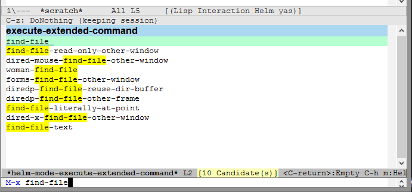
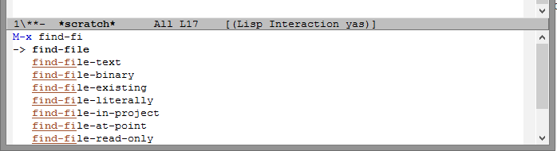

Emacs Basics: Call commands by name with M-x (with tips for better
Table of Contents
completion using ido or helm)
March 31st, 2014 - http://sachachua.com/blog/p/27062
This entry is part 2 of 3 in the series Emacs Basics
Emacs has way too many keyboard shortcuts to memorize. Fortunately, you can call commands by name by typing M-x and the name of the command. M- stands for the Meta key. If your keyboard does not have a Meta key (and most don't, these days), use Alt or Option. For example, on a PC keyboard, you can type Alt-x. Alternatively, you can replace Meta with ESC. M-x then becomes ESC x.
If you know the name of the command to execute, you can type it after M-x, and then press RET (the Return key, which is the same as the Enter key). For example, M-x find-file opens a file. M-x save-buffer saves the current file. You can use TAB to complete words. Use <up> and <down> to go through your command history.
What if you don't know the name of the command to execute? You can use M-x apropos-command to search for the command using keywords. If you know the keyboard shortcut or you can find the command on a menu, you can also use M-x describe-key and then do the keyboard shortcut or select it from the menu.
If a command you execute has a keyboard shortcut, it will flash briefly at the bottom of your screen. For example:
You can run the command `find-file' with C-x C-f
Using TAB for completion can be a little slow. Here are two ways to make
that and a whole lot of other things faster: ido and helm. To
explore these approaches, you will need to add the MELPA package
repository to your configuration. To set that up, add the following to
the beginning of your ~/.emacs.d/init.el file.
(package-initialize)
(add-to-list 'package-archives '("melpa" . "http://melpa.milkbox.net/packages/") t)
Then use M-x eval-buffer to load the changes into your current Emacs, and use M-x package-refresh-contents to reload the list of packages.
Helm mode
This is what completion with Helm looks like:
 Figure 2: Helm
Use M-x package-install to install the helm package. Then you can try
it out with M-x helm-mode . After you start Helm mode, try M-x again.
You can type in multiple words to search for a command, and you can use
<up> and <down> to go through completions. Use M-p and M-n to go through
your command history.
If you like it, here's some code that you can add to your
~/.emacs.d/init.el file to load it automatically next time, and to
tweak it for more convenience.
(require 'helm-config) (helm-mode 1)
Use M-x eval-buffer to load your changes.
If you change your mind and want to disable helm-mode, you can toggle
it off with M-x helm-mode .
Ido, ido-hacks, smex, ido-vertical-mode, and flx-ido
Ido is like Helm, but it takes a different approach. Here's what this combination will get you:
 Figure 1: ido, smex, ido-vertical-mode, and flx-ido
If you want to give this a try, remove or comment out (helm-mode 1)
from your ~/.emacs.d/init.el (if you added it), and disable helm-mode
if you still have it active from the previous section.
To set Ido up, use M-x package-install to install ido, smex,
ido-vertical-mode, ido-hacks, and flx-ido.
After the packages are installed, add the following code to your
~/.emacs.d/init.el .
(ido-mode 1)
(require 'ido-hacks nil t)
(if (commandp 'ido-vertical-mode)
(progn
(ido-vertical-mode 1)
(setq ido-vertical-define-keys 'C-n-C-p-up-down-left-right)))
(if (commandp 'smex)
(global-set-key (kbd "M-x") 'smex))
(if (commandp 'flx-ido-mode)
(flx-ido-mode 1))
Use M-x eval-buffer to load your changes, then try M-x again. You should now have much better completion. You'll be able to call commands by typing in part of their names. Use <up> and <down> to go through the completion options, and use <left> and <right> to go through your history.
Try it for a week. If you like it, keep it. If you don't like it, try the Helm approach.
Other tips
When you learn keyboard shortcuts, try to remember the names of the
commands as well. You can do that with C-h k (describe-key). For
example, M-x calls the command execute-extended-command. That way,
even if you forget the keyboard shortcut, you can call the command by
name.
If you forget the name of the command and you don't know the keyboard
shortcut for it, you can look for it in the menus or in the help file.
You can open the help file with C-h i (info). You can also use M-x
apropos-command to search through the commands that you can call with
M-x.
Make your own cheat sheet with frequently-used keyboard shortcuts and commands to help you learn more about Emacs. Good luck!
{kind=link}
Emacs Basics: M-x
You can download the MP3 from archive.org.
Series Navigation« Emacs Basics: Using the mouseEmacs Basics: Customizing Emacs »
[[ ]]]]
]]]]
Podcast: Play in new window | Download